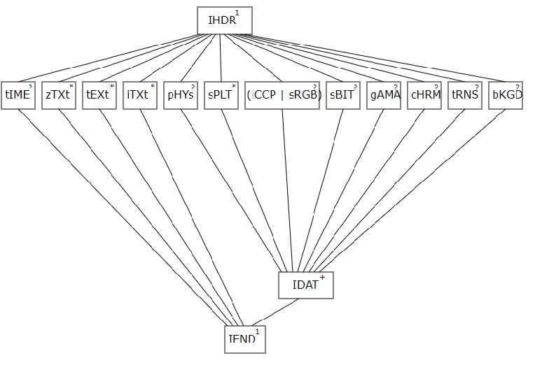

APNG rules!
What is it?
It extends the popular Portable Network Graphics (PNG) file format specification to allow images to be animated similarly to animated GIF files with additional features. The first frame of an APNG file is stored as a normal PNG. Since it is an extension of PNG, most standard decoders will be able to display the file without additional work. Basically it is a PNG file with additional chunks of data to allow for animations.
Why does it exist?
History
It was first developed by Mozilla Corporation in 2004 to store animations needed in UIs (e.g. loading throbbers) to replace MNG animations which were deprecated the year before. MNGs had less functionality than APNGs with a much larger file size due to their decoder, the thing that will read the read and extract headers from the sequence of bytes.
Why isn't it more mainstream?
APNG had a lukewarm reception on release as maintainers on the PNG format debated that their format was strictly a single-image format and it was seen as such in the wider community. The rationale was that applications do not need and will not support multiple images per file due to having separate file formats for animations because a single image and a sequence of images are fundamentally used differently. The only way for a software to correctly distinguish between PNG and APNG is by reading the ancillary chunks which aren’t required to use PNGs, so if a software didn’t know about APNGs, the first frame would show up as a typical PNG. So with the maintainers of the file format against the idea of this implementation and the data of the animation hidden inside ancillary chunks that decoders used in applications could skip, APNG never grew in popularity.
Features/How does it work?
File structure
Since the APNG is an extension on the PNG file format, the base structure of the file/datastream is the same.
Why is APNG outdated now?
| browsers | versions |
|---|---|
| Google Chrome | 96-102 |
| Firefox | 96-100 |
| Microsoft Edge | 97-99 |
| Safari | 14.1-15.4 |
| Opera | 11 |
| Safari on IOS | 12.5-15.4 |
| Chrome for android | 99 |
| Samsung internet | 16 |
| Internet Explorer | not supported |
Features/How does it work?
File structure
Since the APNG is an extension on the PNG file format, the base structure of the file/datastream is the same.
The above image shows the file strucutre of a PNG file PLTE in datastream
Critical Chunks
Critical Chunks are parts of data that must be present in the datastream for a successful decode of a PNG/APNG image and they must appear in this order:
- 1 PNG Signature
- 1 IHDR chunk
- 1+IDAT chunks
- 1 IEND chunk
A Palette (PLTE) chunk can also be added after the IHDR as a critical chunk but is optional depending on the colour type you choose.
A PLTE chunk must exist if you use colour type :
- 3 (indexed-colour/Palette-Based)
can appear in
- 2 (Truecolor/RGB) and 6 (Truecolor/RGB with Alpha)
And must not be in the data stream if you use
- 0 (Grayscale) and 4 (Grayscale with Alpha channel)
PNG Signature
All APNGs start with a PNG signature header that communicates that the subsequent data will be a PNG starting with an IHDR chunk and ending in an IEND chunk
IHDR - Image Header
This chunk must appear first after the PNG signature and contains information on the PNG’s:
- width
- height
- Bit Depth
- Colour Type
- Compression Method
- Filter Method
- Interface Method
IDAT - Image Data
This chunk contains the actual image data so this is where you would store multiple frames of your animation and they must appear consecutively. They do not have a fixed size and boundaries have no semantic significance as all of them are concatenated together in the compressed datastream. The first IDAT chunk is the default image shown if the decoder encounters an error.
IEND Image trailer
Must appear last and it marks the end of the PNG/APNG datastream. Its data field is also empty.
Ancillary chunks
These chunks are not necessary if you want to successfully decode a PNG/APNG file. The APNG specifications add three new ancillary chunks.
- acTL: The Animation Control Chunk
- fcTL: The Frame Control Chunk
- fdAT: The Frame Data Chunk

Animation control chunk (acTL)
This appears before the IDAT chunks and communicates to the decoder the file is an APNG along with the number of frames and the number of times to loop the animation. The number of frames must equal the number of fcTL chunks or an error is thrown.
Frame control chunk (fcTL)
Exactly one these chunks must appear before the first IDAT or fdAT chunk of the frame it applies its content to.
The information that fcTL chunk holds for the upcoming frame is:
- Sequence number of the animation chunk.
- Width and height of the following frame.
- X and Y position at which to render the following frame.
- A frame delay fraction numerator/denominator that will decide the time to display the current frame.
- If the numerator is 0 then the decoder will render the frame as quickly as possible, though programs will set a more reasonable lower bound.
- How the next frame should be disposed of before rendering the subsequent frame.
- Whether the frame is to be alpha blended into the previous frame or completely replace it
The image on the right shows how translucency can be applied to an object using the alpha channel.
Frame data chunk (fDat)
fdAT chunks have the same function and similar structure as an IDAT chunk. The only difference is that fdDAT chunks have an additional 4 bytes at the start that indicates the sequence number again.